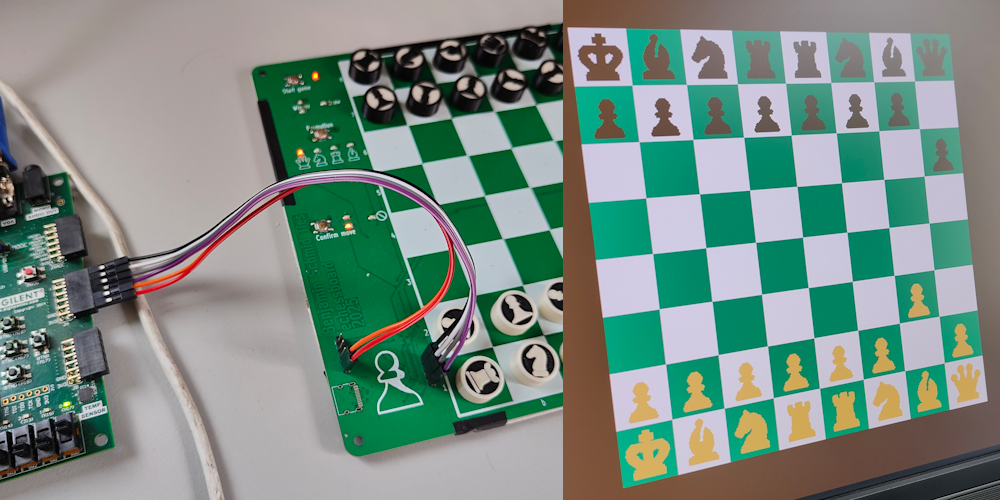
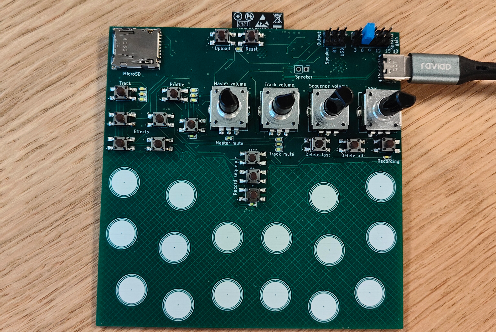
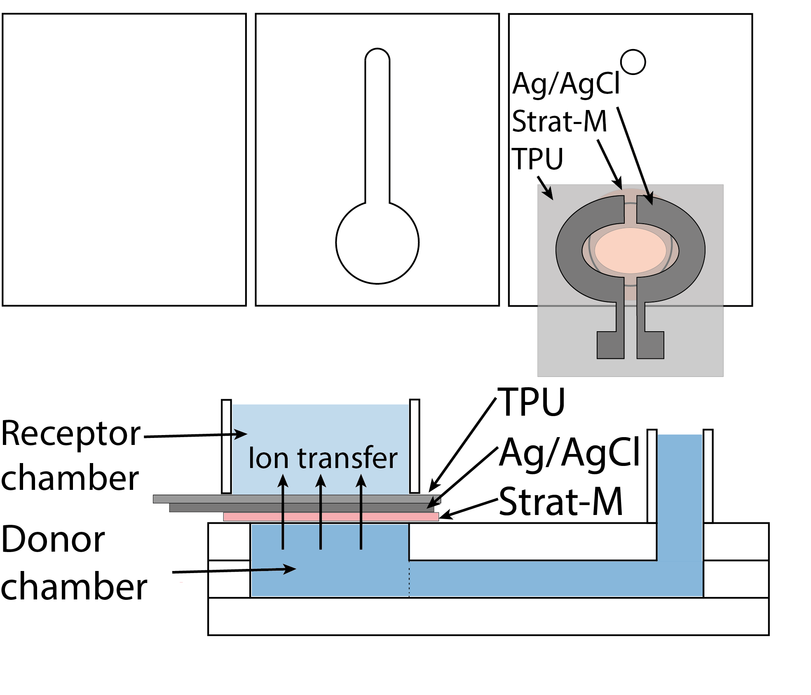

About Me
Hi! I'm Benjamin, an electronics and cyber-physical systems student. On this site, you’ll find my projects, my CV, and ways to reach me.
Projects

echessboard
This project combines a custom PCB, embedded programming, and digital logic design on an FPGA, resulting in a fully functional digital chessboard with real-time visualization. Read the report for an in-depth description.

Drum machine
A compact drum machine to make beatmaking accessible anywhere and to anyone, without relying on bulky or expensive equipment. The goal was to create an intuitive device based on an array of capacitive touch sensors. Refer to the report for a technical overview.
Bachelor thesis

Wearable Sweat Extraction System
My thesis focused on developing a wearable, screen-printed system for on-demand sweat extraction, with applications in wearable biosensors. The long-term goal is to enable continuous health monitoring by analyzing biomarkers in sweat like tumor necrosis factor and Interleukin 6. Read the full thesis or a visual summary.